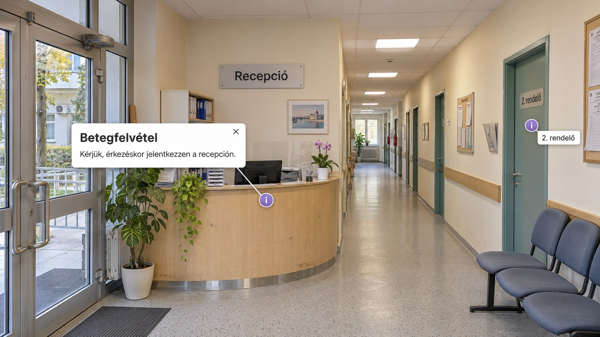
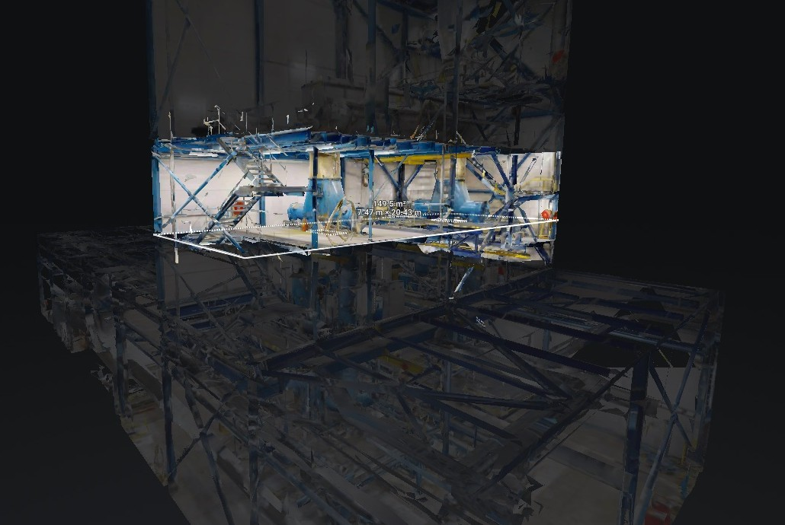
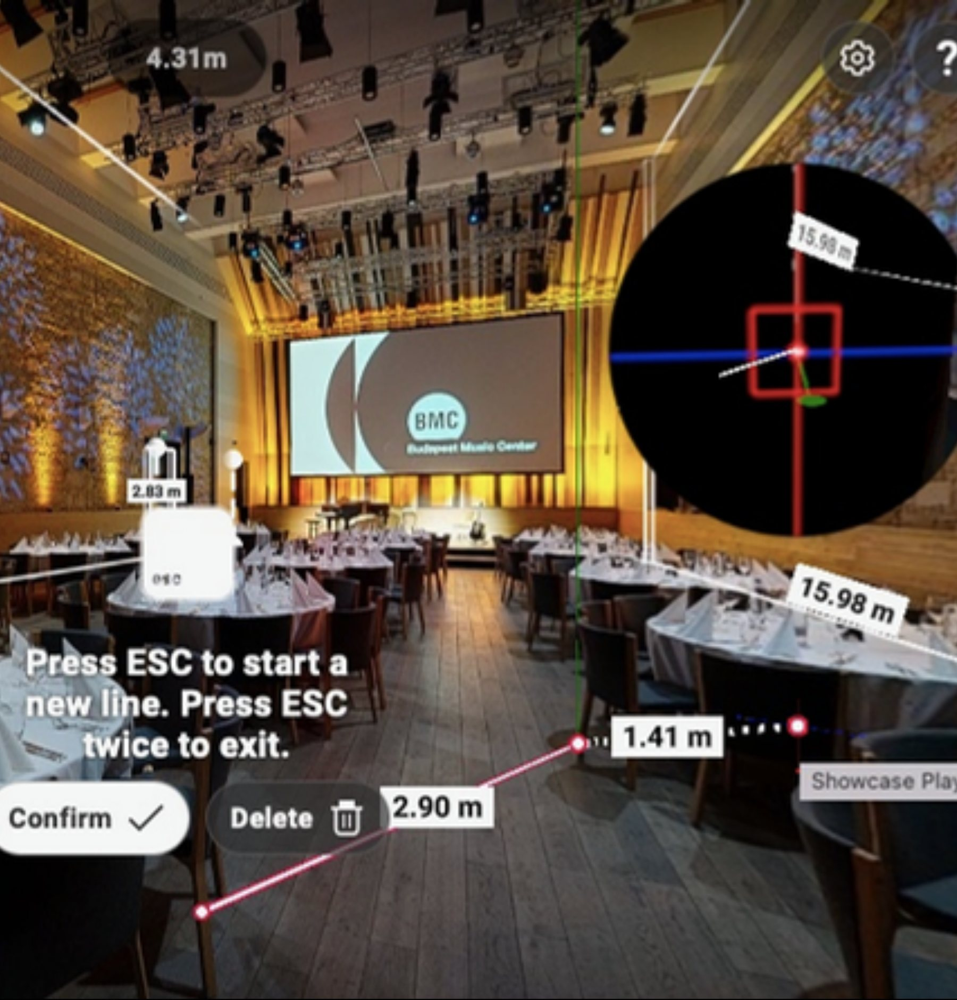
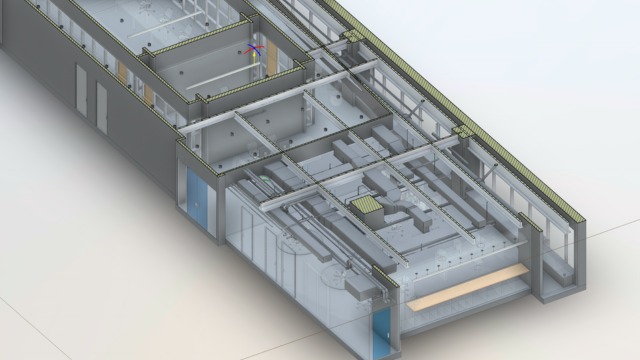
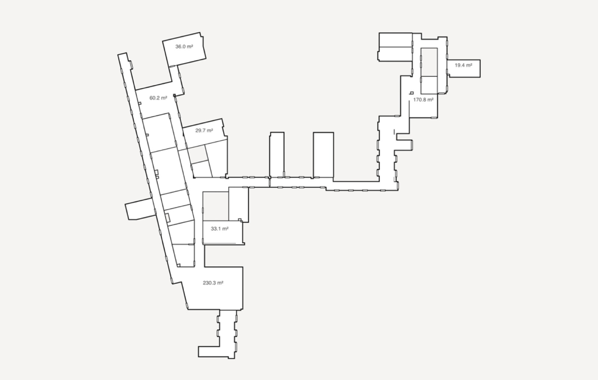

Digitalizált
önkormányzat
Online bejárható, mérhető terek: pontos nyilvántartás, jól hasznosított vagyon, közelebb a lakosokhoz.
Ismerős helyzetek a település épületei körül
Nem tudja, hová érkezik
Melyik épület, melyik bejárat, melyik emelet, hol az iroda?
Csak személyes bejárás után dönt
Minden érdeklődőhöz külön időpont és kiszállás kell.
Szétszórt fotók és emlékek
Egy épület állapotáról az információ több helyen, több kollégánál van.
Újra ki kell mennie mérni
A meglévő állapot felmérése minden munkánál újrakezdődik.
A digitális bejárás nem helyettesíti a helyszínt, de sok utat, egyeztetést és kérdést megspórolhat.
Egy felmérés, több felhasználó
Ugyanazt a digitális teret több terület is használja, ezért egy felmérés értéke több helyen jelenik meg.
Lakosság
Tájékozódás, ügyintézés, akadálymentes megközelítés.
Kultúra és turizmus
Kiállítások, események, városmarketing.
Vagyonkezelő
Nyilvántartás, bérbeadás, állapotkövetés.
Műszaki terület
Méretek, alaprajz, tervezői adatok.
Vezetés és testület
Döntés-előkészítés, átlátható beszámolás.
Mi a digitális bejárás?
- Bejárható térA valós épület valósághű, körbejárható mása, szintekkel és helyiségekkel.
- Makettnézet és alaprajzAz épület egésze egy nézetben, a terek kapcsolatával.
- MérésMéretek közvetlenül a térből, méterben.
- Információs pontokDokumentum, fotó vagy link a térben, ahová tartozik.
Böngészőből, telefonon és számítógépen is működik, program telepítése nélkül.
Saját munka: Budapest Music Center, rendezvénytér
Előre bejárható intézmények, könnyebb ügyintézés
- A lakosok előre megnézhetik, hová érkeznek: ügyfélszolgálat, hivatal, egészségház, sportlétesítmény.
- Könnyebb tájékozódás: bejárat, emelet, iroda, útvonal megjelölve.
- Iskolai nyílt nap, óvodai beiratkozás vagy idősek klubja előtt is bejárható.
- Akadálymentes megközelítés bemutatva: rámpák, liftek, bejáratok.
- Egy tervezett átalakítás előtt a lakosok megnézhetik a teret, és elmondhatják a véleményüket.
Eredmény: egyszerűbb ügyintézés, kevesebb kérdés és félreértés, esélyegyenlőség, szolgáltató önkormányzat.

Online kiállítások, szélesebb közönség
- Kiállítások és események dokumentálva: a tárlat bezárása után is bejárható marad.
- Aki nem jut el személyesen, otthonról is megnézheti.
- A bejárás kedvet csinál, és más településekről is látogatót hoz.
- Műemlékek és helyi védett épületek állapota megőrizve, felújítás előtt is.
- A helyi értékek egy helyen, büszkén megmutatva.
Eredmény: nagyobb elérés, több látogató, erős érv kulturális és örökségvédelmi pályázatokhoz.
Saját munka: József Attila Emlékhely
Online ingatlanbemutatás, gyorsabb hasznosítás
- A bérlő előre bejárja a teret; személyesen többnyire már a komoly érdeklődők jönnek.
- Eladásnál a kiírás mellett bejárható ingatlan, alaprajzzal és méretekkel.
- Rendezvénytér, közösségi tér, ideiglenes használat bemutatása.
- A felszabaduló épületek új hasznosítása előtt a teljes épület egy linken.
Eredmény: rövidebb üresjárat, kevesebb kiszállás, hatékonyabb közpénz-felhasználás.
 Eladó ingatlan – Irhás árok3D bejárás indítása
Eladó ingatlan – Irhás árok3D bejárás indításaSaját munka: eladó ingatlan, Irhás árok
Bemutatható ipari területek, több érdeklődő befektető
- Szabad csarnokok, ipari és fejlesztési területek bejárhatóan, méretekkel.
- A betelepülni szándékozó cégek távolról is felmérhetik a lehetőségeket.
- Az első tájékozódás után már célzottabb a helyszíni látogatás.
Eredmény: megalapozottabb befektetői döntések, új vállalkozások, helyi munkahelyek.
 Ipari terület3D bejárás indítása
Ipari terület3D bejárás indításaSaját munka: ipari terület
Digitális vagyonnyilvántartás, átlátható gazdálkodás
- Az ingatlanok dokumentálva, a vagyonkezelőnél egységes nyilvántartásban.
- Bérlőváltáskor a ki- és beköltözéskori állapot rögzítve, egyértelmű elszámolással.
- Állapotfelmérés és felújítás: a hibák helyhez kötve, előtte–utána összevethetően.
- A vagyonkezelő, a karbantartó és a tervező ugyanazt a teret látja; az információ kéznél van az épülettel dolgozó szakembereknek.
- A képviselők és a bizottságok egy épületről távoli bejárás után dönthetnek.
Eredmény: átlátható vagyongazdálkodás, kevesebb vita, gyorsabb döntések.
Városi intézmény
- Alapterület
- 1 240 m²
- Szintek
- 4
- Helyiségek
- 38
- Utolsó felmérés
- 2026. 11.
- Állapot
- 2. emelet: felújítás tervezve
Dokumentált fejlesztések, látható eredmények
- Az építési szakaszok rögzítve, a takarásba kerülő gépészet és szerkezet is visszanézhető.
- A fejlesztés haladása megmutatható a lakosoknak.
- Az elkészült beruházás bejárhatóan bemutatva, nem csak fotón.
Eredmény: átláthatóság, látható eredmények: látszik, mire fordították a közpénzt.

Mérhető terek, pontosabb tervek


Saját felmérések. A méretek tervezési és tájékozódási célra megbízhatók; mérnöki pontosság igényét előre egyeztetjük.
Kevesebb helyszíni felmérés, gyorsabb tervezés
- E57 pontfelhő, BIM-modell (RVT, IFC), CAD-rajz (DWG, PDF) igény szerint, a felhasználási célhoz igazítva.
- Tervezők és kivitelezők a meglévő állapotból indulhatnak ki.
- Üzemeltetés: berendezések, gépészet, helyiségek adatai a térhez kötve.
Eredmény: pontos alap a tervezéshez, idő- és költségmegtakarítás.

Előzetes helyismeret, biztosabb beavatkozás
- Tűzoltók, katasztrófavédelem és vagyonőrök előre megismerhetik az épületet.
- Menekülési útvonalak, kijáratok és közműelzárók megjelölve.
- Az új kollégák gyorsabban betanulnak az épületekbe.
Eredmény: felkészültebb beavatkozás, gyorsabb betanulás; a biztonsági előírásokat kiegészíti, nem váltja ki.

Szabályozott hozzáférés, védett adatok
Eldönthető, ki mit láthat: nyilvános bejárás a lakosoknak, védett anyag a belső használatra. Az érzékeny terek és adatok elrejthetők.
Bárki megtalálhatja
Honlap, hirdetés, pályázati kiírás.
Csak akinek elküldik
Ajánlat, egyeztetés, tervezői munka.
Jelszóval vagy belső fiókkal
Óvodák, iskolák, hivatali és gépészeti terek.
Hol hozhat a legtöbbet a digitalizáció a településnek?
Nem minden épületnél és területen van rá szükség. Önök választják ki, hol segít a legtöbbet: ott, ahol a helyszín ismerete ma sok időt, utat vagy egyeztetést igényel.
Lakossági kapcsolat
Előre bejárható intézmények, könnyebb ügyintézés.
Kultúra, turizmus
Online kiállítások, szélesebb közönség.
Hasznosítás
Gyorsabb bérbeadás, értékesítés, befektetők.
Nyilvántartás
Átlátható vagyongazdálkodás.
Beruházások
Dokumentált fejlesztések, látható eredmények.
Műszaki adatok
Mérhető terek, pontosabb tervek.
Biztonság
Előzetes helyismeret, gyorsabb betanulás.
Adatkezelés
Szabályozott, védett hozzáférés.
Kezdjük ott, ahol a leggyorsabban látszik az eredmény
Egy 30 perces egyeztetésen kiválasztjuk azt a két-három épületet vagy területet, ahol a digitális bejárás a leggyorsabban hoz kézzelfogható eredményt: kevesebb kiszállást, gyorsabb hasznosítást, egyszerűbb ügyintézést a lakosoknak.
Időpontot foglalok